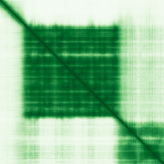

type: protein-evaluation gene: "FRG1" date: 2026-06-02 tags: [protein-scout, nucleolus, evaluation] status: scored ---
FRG1 核蛋白评估报告
1. 基本信息
| 项目 | 内容 |
|---|---|
| 基因名 / 别名 | FRG1 / — |
| 蛋白全名 | Protein FRG1 |
| 蛋白大小 | 258 aa / 29.2 kDa |
| UniProt ID | Q14331 |
2. 评分总览
| 维度 | 得分 | 权重 | 加权后 | 关键证据摘要 |
|---|---|---|---|---|
| 核定位特异性 | 8/10 | ×4 | 32.0 | UniProt: Cajal body + Nucleolus + Cytoplasm + Z line (ECO:0000269实验证据); GO-CC: Cajal body, catalytic step 2 spliceosome, nucleolus (IDA/IBA) |
| 蛋白大小 | 7/10 | ×1 | 7.0 | 258 aa, 29.2 kDa, 小-中等 |
| 研究新颖性 | 4/10 | ×5 | 20.0 | PubMed strict=64, ≤80 |
| 三维结构 | 5/10 | ×3 | 15.0 | AlphaFold mean pLDDT 75.8; 3 PDB (EM, 剪接体复合物) |

| 调控结构域 | 2/10 | ×2 | 4.0 | IPR008999, IPR010414, PF06229 — FRG1 结构域; 简单 |
| PPI 网络 | 6/10 | ×3 | 18.0 | 剪接体网络 (CWC22 0.998 exp, PRPF8, SNRPF 等 ≥0.828); IntAct 含 SART3/CAND1/ESR1 等 |
| 加权总分 | 96/180** | |||
| 互证加分 | +0.0 | |||
| 归一化总分 (÷1.83) | 52.5/100** |
3. 详细分析
3.1 核定位证据
| 来源 | 定位 | 可信度 |
|---|---|---|
| UniProt | Nucleus, Cajal body (ECO:0000269 ×3); Nucleus, nucleolus (ECO:0000269 ×3); Cytoplasm (ECO:0000269 ×2); Z line (ECO:0000269) | 高（实验证据） |
| GO-CC | Cajal body (IEA), catalytic step 2 spliceosome (IDA:UniProtKB), nucleolus (IBA:GO_Central), striated muscle dense body (IBA), Z disc (IEA) | 高（含 IDA/IBA） |
| Protein Atlas (IF) | HPA 无 IF 图像（no_image_detected） | 未确认 |
HPA IF 状态: no_image_detected — HPA 未检测到标准 IF 图像，但有 image_urls（可能为 IHC 或 RNA 表达数据）。核定位基于 UniProt + GO-CC。
结论: FRG1 核定位证据充分，特异性高。UniProt 以多实验证据（ECO:0000269 ×3）确认 Cajal body 和 nucleolus 双重核内定位。GO-CC 含催化步骤 2 剪接体 (IDA) 和 nucleolus (IBA)。此外在骨骼肌中有 Z line 定位，提示组织特异性。作为 Cajal body + nucleolus 双定位蛋白，核内空间分布明确。关键文献 PMID:20970242 直接命名为 "FRG1 is a dynamic nuclear and sarcomeric protein"。
3.2 结构与数据源
| 指标 | 数值 |
|---|---|
| AlphaFold | AF-Q14331-F1 |
| 平均 pLDDT | 75.8 |
| pLDDT >90 | 23.6% |
| pLDDT 70-90 | 43.0% |
| PDB | 3 个结构（EM 3.40-5.00A），均为剪接体复合物中鉴定 |
| InterPro | IPR008999 (Actin cross-linking), IPR010414 (FRG1) |
| Pfam | PF06229 (FRG1) |
AlphaFold PAE 状态: PAE 已下载，模型置信度中等（mean pLDDT 75.8）。FRG1 结构域折叠预测可靠，部分区域有内在无序倾向。PDB 有 3 个 EM 结构（6ZYM/7A5P/8I0W），均在人类剪接体复合物中鉴定。
3.3 研究现状
| 指标 | 数值 |
|---|---|
| PubMed strict (Title/Abstract) | 64 |
| PubMed broad | 123 |
| 别名 | 无 |
关键文献：FRG1 核心研究方向围绕面肩肱型肌营养不良（FSHD）。关键文献包括 FRG1 作为动态核与肌节蛋白的鉴定（PMID:20970242, "FSHD region gene 1 (FRG1) is a dynamic nuclear and sarcomeric protein"）、FRG1 在肌肉发育中的关键作用（PMID:19097195）、FRG1 是无义介导 mRNA 降解基因的直接转录调控因子（PMID:36521634）、FBXO32-FRG1 在胰腺癌中的功能（PMID:38775804）。FSHD 综合综述（PMID:28915324）涵盖了 FRG1 区域。文献集中在肌肉疾病和前体 mRNA 剪接/加工方向。
3.4 PPI 网络（三源综合）
| Partner | Source | Score/Evidence | Relevance |
|---|---|---|---|
| CWC22 | STRING | 0.998 (exp 0.998) | Spliceosome factor |
| FRG2 | STRING | 0.987 (textmining 0.987) | FSHD region gene |
| DUX4 | STRING | 0.927 (textmining 0.927) | FSHD causal gene |
| PRPF8 | STRING | 0.906 (exp 0.900) | Spliceosome core |
| SNRPF | STRING | 0.902 (exp 0.800) | Sm protein |
| CIR1 | STRING | 0.901 (exp 0.800) | Spliceosome |
| PPWD1 | STRING | 0.870 (exp 0.802) | Spliceosome |
| EFTUD2 | STRING | 0.829 (exp 0.826) | Spliceosome |
| SNW1 | STRING | 0.836 (exp 0.800) | Spliceosome |
| BCAS2 | STRING | 0.842 (exp 0.800) | Spliceosome |
PPI 网络集中在剪接体/RNA 加工复合物（CWC22, PRPF8, EFTUD2, SNRPF 等），与 FRG1 在 Cajal body 和剪接体中的定位吻合。CWC22 实验得分极高达 0.998。IntAct 确认 SART3 (co-IP, PMID:19615732)、CAND1 (TAP, PMID:21145461)、LRRK2 (co-IP, PMID:31046837)、ESR1 (TAP, PMID:31527615) 等互作。H3C1（BioID 邻近标记, PMID:29568061）提示染色质邻近关系。
UniProt 记录互作: CWC22 (2), EXOSC8 (3), GNMT (3), KRT40 (3), LZTS2 (3)。
4. 总体评价
FRG1 是一个核定位证据充分但文献量偏高的候选（52.5/100）。核心优势：Cajal body + nucleolus 双核内定位（UniProt 实验证据充分）、剪接体相关 PPI 网络（CWC22 等）、PDB 已有 EM 结构。核心弱点：文献量中等偏高（PM=64, broad=123 含 FSHD 方向大量关注）、结构域注释简单（仅 FRG1 结构域）、AF 置信度中等、无 HPA IF 验证。作为 nucleolus 类别候选，定位特异性（Cajal body + nucleolus）和剪接体功能关联是核心价值，但 FSHD 疾病关联使文献热度不低。
5. 数据来源
- UniProt: https://www.uniprot.org/uniprotkb/Q14331
- AlphaFold: https://alphafold.ebi.ac.uk/entry/Q14331
- PubMed: https://pubmed.ncbi.nlm.nih.gov/?term=FRG1
- Protein Atlas: https://www.proteinatlas.org/ENSG00000109536-FRG1（无 IF 原图）
HPA IF 原图未可靠获取（HPA检索页无可用的subcellular IF原图）。核定位基于HPA localization/reliability + UniProt + GO-CC。
PAE 图像暂无数据（未生成本地图片或未可靠获取），结构判断基于AlphaFold pLDDT统计。